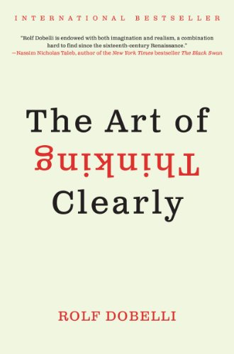

I'm from India. I have completed my bachelors in computer science in 2019. Later I joined Infor India PVT LTD, worked on ERP product developing new features and customizing it according to the customer requirements. Then I got oppurtunity in Oracle as a Integration developer.
This books helps in analysing each and every situation clearly out of our common biased thinking with clarity. This book refreshened my thoughts and helped me in handling situations which are out of my hand
